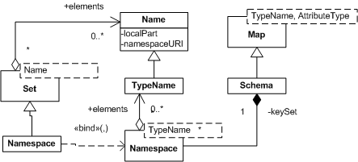

Feature model ISO 19109 with allowances for usability.
This package captures the type information for a general feature model. This feature model has been produced after review of the ISO 19109
specification, and a review of several java implementations.
Capabilities:
- Provide information for the creation of new feature data and the validaiton of existing feature data
- Provide enough description to support the use of a Query Language for data access. We have tested with
the Filter 1.0, Filter 1.0 and Common Query Lanague at this time.
- Capture enough information to permit the seamless handling of models
taken from XML specifications, in particular the use of Sequence,
Choice and support XPath access have proven a challenge.
- Provide for a definition of a SimpleFeatureType similar in spirit to
the previous GeoAPI feature model in which access methods may be used
directly and are based around simple Strings.
- Consistent with common java usage conventions
Possibilities for future work:
- Representation of application schema as a first class object
- Using naming consistent with ISO 19109 specification
Type System
PropertyType forms a class hierarchy representing type information for the feature model.

The following ideas are central to the functioning of this package as
a feature model:
- AttributeType is the base "Type" in the system, it is bound against
a java Class and may be reused.
- AttributeType may indicate available operations using
"OperationDescriptors", these descriptors have an OperationType
describing their required parameters as list of AttributeTypes
- AttributeType contains set of Filters that are used to "constrain"
the permissible value
- AttributeType is allowed to be an extension of a super type. This
presents one known issue: the bound java classes may not be compatible
even if the modelling a subset is properly represented
(An example is Integer representing a subset of BigInteger).
- ComplexType contains additional PropertyDescriptors describing
attributes and associations along with cardinality information. Each
descriptor is named (in a similar fashion to Java fields being named
in a Class).
- FeatureType explicitly represents a spatial type, with additional
information such as CRS and default geometry.
Identified objects allow for a String "ID" that; the use of which is application specific.
Some applications, such as GML, have strict guidelines on the use of identifiers.
As pointed out above ComplexType can be used to represent data with interesting
internal structure. Descriptors are provided to document formally what information is
available for retrieval by a query language.
 Descriptors are used to describe the composition and relationships between entities in our feature model.
AssociationDescriptors are used describe relationships between entities; AttributeDescriptors are used
to describe aggregation. Several specific subclasses of AttributeDescriptor are available for working
with specific kind of content such as GeometryDescriptor.
Descriptors are used to describe the composition and relationships between entities in our feature model.
AssociationDescriptors are used describe relationships between entities; AttributeDescriptors are used
to describe aggregation. Several specific subclasses of AttributeDescriptor are available for working
with specific kind of content such as GeometryDescriptor.
Differences from ISO 19103 with respect to Naming
We have explicitly made the following break with ISO 19103:
- Name - we have adopted a simple definition of Name based on QName.
The ISO implementation combined the responsibilities of naming with the
implementation of a chained linked list of names. The result was heavy
weight, and strange and has not proved intuitive in practice.
- Namespace - implemented as Set, this is also a tagged with its
own Namespace. The ISO implementation combined the responsibilities of
lookup with those of maintaining a namespace scope for a provided name
(ie bidirectional link between Namespace and Name). The required
backpointer prevented Name from being lightweight and has been removed.
As indicated above we have removed the "back pointers" required to navigate from Name to
its "context", instead we have provided a URI which should be used with your lookup system
of choice. This choice may in fact be Namespace (and is when working with TypeNames
in a Schema), however the actual implementation should be provided by the hosting
language in many cases.

Many applicaitons will make use of their own register when resolving names;
we offer the use of javax.naming.Name API as a recommendation.
Differences from ISO 19109 with respect to General Feature Model
We have explicitly made the following break with ISO 19109:
- TypeName - we have separated out the concerns of TypeDefinition
from TypeName, in ISO 19109 these were combined and caused great
confusion when implementing.
- AttributeName - also separated from AttributeType in a similar
manner.
Numerous other changes have been made to leverage Java collection API
where appropriate. These represent a direct mapping onto the language
constructs and may or may not prove significant to those arriving from an
ISO 19109 background.
Relationship to ISO 19109 Primer
This work is greatly informed from a proposal included in the ISO
19109 primer - written by Bryce. In particular the requirement for
operations, associations and detailed review of ISO19109, and EMF was a
great asset. This primer also served as the only public documentation of
the ISO 19109 material available for open development.
Differences from Bryce's proposal:
- Name, TypeName and Namespace as above
- Schema - we once again do not combine implementation with
identification (the proposal for Package extended ScopedName). We have
implemened a Schema class as a Map this works
out nicely as the keySet ends up being the Namespace for the Schema.
- Factory and Type separation, we have explicitly not extended our
type Schema class in order to make a FeatureFactory. A requirement of
the type system is to allow for application supplied FeatureType
creation, this is a seperate concern then modeling and grouping feature
types.
The definition of Record and Name wsere unresolved at the time of this
work and has not been integrated. In particular the definition of Name
was taken as "too complicated".
We also disagreed with one of the goals of the proposal: convention
that the creation of objects inside an application schema is the
responsibility of the schema author. This goal is in conflict with
our need to allow applications to create instances of their own
devising. This need is particulary apparent when an application needs to
ensure the use of a specific base class (for example to work with a
persistence system Jaxtor, or modeling system like EMF).